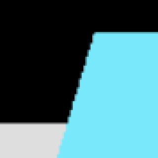
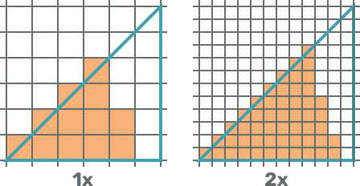

Měnění velikosti canvasu
V této části si ukážeme, jak můžeme měnit velikost canvasu. Vlastně si spíš ukážeme, jak můžeme třeba canvas roztáhnout přes celé okno prohlížeče a jak správně reagovat na změnu velikosti okna.
Startovní kód
Zatím jsme v našich příkladech pro velikost canvasu používali jen nějaké fixní rozměry, které jsme si předem určili (akorát tady v ukázkách na webu jsem to samozřejmě řešil, aby to bylo responzivní). V této části si již zkusíme canvas roztáhnout přes celé okno prohlížeče. Abychom měli alespoň něco k renderování, tak si vytvoříme jednoduchou scénu. Pomocí startovního kódu z části o Webpacku si vytvořte nový projekt a do JavaScript souboru si zkopírujte kód z následující ukázky. Pomocí tohoto kódu jen vytváříme scénu a přidáváme do ní kostku, kouly, kužel a pod ně obdelníkovou plochu. Ani zatím nevytváříme kameru a renderer.
import './style.css';
import * as THREE from 'three';
// vytvoření scény
const scene = new THREE.Scene();
// vytvoření materiálů pro objekty
const orangeMaterial = new THREE.MeshBasicMaterial({ color: 0xFAB278 });
const blueMaterial = new THREE.MeshBasicMaterial({ color: 0x78E8FA });
const greyMaterial = new THREE.MeshBasicMaterial({ color: 0xdedede })
// vytvoření kostky
const cube = new THREE.Mesh(
new THREE.BoxGeometry(1, 1, 1),
blueMaterial
);
scene.add(cube);
// vytvoření koule
const sphere = new THREE.Mesh(
new THREE.SphereGeometry(0.5, 16, 12),
orangeMaterial
);
sphere.position.x = -1.5;
scene.add(sphere);
// vytvoření kužele
const cone = new THREE.Mesh(
new THREE.ConeGeometry(0.5, 1, 12),
orangeMaterial
);
cone.position.x = 1.5;
scene.add(cone);
// vytvoření plochy pod objekty
const plane = new THREE.Mesh(
new THREE.PlaneGeometry(5, 5),
greyMaterial
)
plane.position.y = -0.5;
plane.rotation.x = -Math.PI * 0.5;
scene.add(plane);Roztažení canvasu přes celé okno prohlížeče
Canvas budeme chtít roztáhnout přes celé okno prohlížeče. Máme více možností jak to udělat a mohli bychom na něj kromě měnění jeho velikosti v JavaScriptu také aplikovat nějaké CSS styly. Bude ale stačit, když budeme jeho velikost měnit v JavaScriptu. Akorát bychom ale v CSS stylech měli provést nějaký reset, aby se na elementy neaplikoval defaultní margin nebo padding. Takže si ve složce src otevřete soubor style.css a zkopírujte tam následující kód. Ten pro všechny elementy nastaví padding a margin na 0 a vlastnost overflow pro body element na hidden.
*, *::before, *::after {
padding: 0;
margin: 0;
}
body {
overflow: hidden;
}Teď můžeme canvasu prostřednictvím JavaScriptu nastavit velikost podle velikosti okna prohlížeče a začít do něj vykreslovat. K rozměrům okna prohlížeče máme přístup pomocí window.innerWidth a window.innerHeight. Nejdříve ale můžeme vytvořit kameru a nastavit jí podle rozměrů okna prohlížeče poměr stran. Co jednotlivé parametry při vytváření kamery znamenají byste měli vědět z minulé části. Kameře také nastavíme pozici a natočíme ji tak, aby se dívala na souřadnice [0, 0, 0].
/* ... */
// vytvoření kamery
const camera = new THREE.PerspectiveCamera(45, window.innerWidth / window.innerHeight, 0.1, 10);
// napozicování kamery
camera.position.z = 4;
camera.position.y = 2;
// nastavení aby se kamera dívala na souřadnice [0, 0, 0]
camera.lookAt(0, 0, 0);Teď můžeme vytvořit renderer a předat mu při jeho vytváření canvas, který si získáme z DOMu podle id. Jelikož velikost canvasu můžeme nastavit přes renderer pomocí metody setSize, tak to tak uděláme.
/* ... */
// vytvoření rendereru
const renderer = new THREE.WebGLRenderer({
canvas: document.getElementById("WebGLCanvas")
});
// změnění velikosti canvasu podle velikosti okna prohlížeče
renderer.setSize(window.innerWidth, window.innerHeight);Teď máme vše připraveno, abychom mohli scénu vyrenderovat na canvas. Můžeme tedy zavolat metodu render.
/* ... */
// vyrenderování scény na canvas
renderer.render(scene, camera);Pokud si teď aplikaci spustíte v prohlížeči, tak se vám scéna vyrenderuje přes celou obrazovku. Pokud ale změníte velikost okna, velikost canvasu se nezmění. To zachvíli pořešíme. Tady v ukázce na webu se vám po spuštění ukázky scéna nevyrenderuje přes celou obrazovku, je to tu jen tak.
Reagování na změnu velikosti okna
Když změníme velikost okna, tak to na velikost našeho canvasu nemá žádný vliv. Proto teď přidáme event listener pro změnu velikosti okna a budeme na to reagovat změněním velikosti canvasu a aktualizací poměru stran kamery. Také znovu vyrenderujeme scénu, jelikož nepoužíváme žádnou animační smyčku, kterou jsme si vytvářeli v části o animaci.
/* ... */
// přidání event listeneru pro změnu velikosti okna prohlížeče
window.addEventListener("resize", () => {
// změnění poměru stran kamery
camera.aspect = window.innerWidth / window.innerHeight;
camera.updateProjectionMatrix();
// změnění velikosti canvasu
renderer.setSize(window.innerWidth, window.innerHeight);
// vyrenderování scény na canvas
renderer.render(scene, camera);
});Jak v předchozí ukázce kódu vidíte, po změnění poměru stran kamery voláme metodu updateProjectionMatrix. To je nutné aby se kamera aktualizovala, musíme ji volat po jakékoliv změně jejich parametrů. Když teď změníte velikost okna, tak se vám změní i velikost canvasu a scéna se vám znovu vyrenderuje. Tady na web jsem ukázku nedával, protože by byla stejná jako ta předchozí.
Pixel ratio
Ve vyrenderované scéně můžete na hranách objektů vidět takové schody (pixely). Ukazuje je následující obrázek.
Pokud tyto schody nevidíte, tak to může znamenat, že máte vyšší hustotu pixelů. A pokud máte vyšší hustotu pixelů, tak máte pravděpodobně vyšší pixel ratio. To udává v prohlížeči poměr fyzických pixelů vůči CSS pixelům. V JavaScriptu jej můžeme zjistit pomocí window.devicePixelRatio. Mobily mají například vyšší hustotu pixelů než počítače, ale jejich pixely jsou malé, proto se třeba berou dva fyzické pixely jako jeden. Pokud by to tak nebylo, tak by byl na mobilu design webové stránky moc malý a text by se hůře četl. Takže když například nějakému elementu v CSS stylech nastavíme rámeček třeba 2 pixely, na počítači klidně 2 pixely mít může, ale na mobilu se třeba zobrazí klidně i pro 4 fyzické pixely. To ale nemusí platit pro všechno a pro canvas také ne. Tam se fyzické pixely mohou klidně použít a na některých zařízeních se tak vyhneme vyrenderování schodů, které ukazuje předchozí obrázek. Pokud chceme pixel ratio změnit, tak to můžeme udělat na rendereru pomocí metody setPixelRatio. A je dobré to udělat, protože některá zařízení mohou mít zbytečně velké pixel ratio. Díky metodě setPixelRatio jej můžeme omezit a zlepšit tak výkon naší aplikace. Větší pixel ratio jak 2 není potřeba, nedíváme se na displej z 5 centimetrů. Čím větší máme pixel ratio, tím více času zabere GPU renderování. Když se podíváte na následující obrázek, tak vidíte že GPU musí každý pixel procházet a zjišťovat jestli jej vybarvit nebo ne. Když máme pixelů více, potrvá to déle.
V našem příkladu omezíme pixel ratio na hodnotu 2. Využijeme k tomu funkci Math.min, které předáme hodnotu, kterou uchovává window.devicePixelRatio a hodnotu 2. Nazpět se nám vrátí menší ze dvou předaných čísel a to nastavíme jako pixel ratio pomocí metody setPixelRatio. Můžeme to udělat hned po vytvoření rendereru a nastavení velikosti canvasu jak ukazuje následující ukázka.
/* ... */
// vytvoření rendereru
const renderer = new THREE.WebGLRenderer({
canvas: document.getElementById("WebGLCanvas")
});
// změnění velikosti canvasu podle velikosti okna prohlížeče
renderer.setSize(window.innerWidth, window.innerHeight);
// omezení pixel ratio na hodnotu 2
renderer.setPixelRatio(Math.min(window.devicePixelRatio, 2));
// vyrenderování scény na canvas
renderer.render(scene, camera);
/* ... */Měnit pixel ratio je také dobré při změně velikosti okna prohlížeče, jelikož uživatel třeba může mít dva monitory a přetáhnout okno z jednoho monitoru na druhý, který může mít jiné pixel ratio. Proto zavoláme metodu setPixelRatio i v tomto případě.
/* ... */
// přidání event listeneru pro změnu velikosti okna prohlížeče
window.addEventListener("resize", () => {
// změnění poměru stran kamery
camera.aspect = window.innerWidth / window.innerHeight;
camera.updateProjectionMatrix();
// změnění velikosti canvasu
renderer.setSize(window.innerWidth, window.innerHeight);
// nastavení pixel ratio
renderer.setPixelRatio(Math.min(window.devicePixelRatio, 2));
// vyrenderování scény na canvas
renderer.render(scene, camera);
});Vyrenderováním schodů na hranách objektu se dá předejít kromě vyšší hustoty pixelů i zapnutím anti-aliasingu, to si ale ukážeme v jiné části.
Fullscreen
Na závěr této části si ještě ukážeme, jak můžeme canvas zobrazit přes celou obrazovku. Využijeme na to metodu requestFullscreen, která nám umožňuje zobrazit přes celou obrazovku jakýkoliv HTML element na kterém ji zavoláme. Zavoláme ji tedy na canvasu a ten se nám zobrazí přes celou obrazovku. K tomu si ale canvas budeme muset v našem kódu uložit do proměnné a ne jej jen přímo předat rendereru. Proto upravte kód pro vytváření rendereru do následující podoby.
/* ... */
// získání canvasu podle id
const canvas = document.getElementById("WebGLCanvas");
// vytvoření rendereru
const renderer = new THREE.WebGLRenderer({
canvas: canvas
});
/* ... */Canvas budeme chtít zobrazit přes celou obrazovku, když na něj třeba dvojklikem klikneme. K tomu si můžeme přidat event listener pro event jménem "dblclick". Po jeho spuštění zavoláme na canvasu metodu requestFullscreen a canvas se nám zobrazí přes celou obrazovku.
/* ... */
// přidání event listeneru pro dvojklik na canvas
canvas.addEventListener("dblclick", () => {
// zobrazení canvasu přes celou obrazovku
canvas.requestFullscreen();
});Po spuštění aplikace v prohlížeči si na canvas můžete dvojklikem kliknout a měl by se vám zobrazit přes celou obrazovku. Zobrazení přes celou obrazovku ukončíte pomocí klávesy ESC.
Při zobrazení canvasu přes celou obrazovku bychom naopak mohli chtít při dvojkliku na canvas zobrazení přes celou obrazovku ukončit. To můžeme udělat pomocí metody document.exitFullscreen. Musíme ale nějak zjišťovat, jestli je canvas zobrazený přes celou obrazovku nebo ne. Pokud není, tak jej při dvojkliku přes celou obrazovku zobrazíme a pokud je, tak zobrazení přes celou obrazovku zrušíme. K přístupu k elementu, který je zobrazen přes celou obrazovku máme přístup pomocí document.fullscreenElement. Pokud je tato hodnota null, tak není přes celou obrazovku zobrazen žádný element. Budeme se tedy ptát, jestli je přes celou obrazovku zobrazen nějaký element a podle toho canvas zobrazíme přes celou obrazovku nebo jeho zobrazení přes celou obrazovku zrušíme.
/* ... */
// přidání event listeneru pro dvojklik na canvas
canvas.addEventListener("dblclick", () => {
if (!document.fullscreenElement) {
// zobrazení canvasu přes celou obrazovku
canvas.requestFullscreen();
} else {
// zrušení zobrazení přes celou obrazovku
document.exitFullscreen();
}
});Teď byste již měli být dvojklikem na canvas schopni zapínat i vypínat zobrazení přes celou obrazovku.
Pro tuto část je to vše. Nyní již víte jak můžete canvasu nastavovat velikost. Také jste se dozvěděli co je to pixel ratio a jak zobrazit canvas přes celou obrazovku. V příští části si ukážeme jak můžeme provádět interakci s canvasem pomocí různých typů ovládání, které nám Three.js poskytuje.